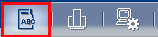

To go to "Job List", click the "Job List" button in the operating panel.

In the "Job List" section, you can check the jobs that were processed and those that are just being processed.
Job list context-sensitive menu
Statistics about Processed Jobs
Restarting, Continuing, Pausing, Canceling Your Jobs
Creating a New Job from Existing Tiff-B Files
Copyright © 2013 Heidelberger Druckmaschinen AG